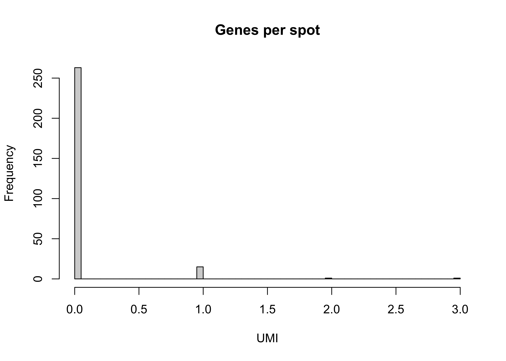

Last updated: 2024-07-08
Checks: 7 0
Knit directory: RA_SingleCellAnalysis/
This reproducible R Markdown analysis was created with workflowr (version 1.7.1). The Checks tab describes the reproducibility checks that were applied when the results were created. The Past versions tab lists the development history.
Great! Since the R Markdown file has been committed to the Git repository, you know the exact version of the code that produced these results.
Great job! The global environment was empty. Objects defined in the global environment can affect the analysis in your R Markdown file in unknown ways. For reproduciblity it’s best to always run the code in an empty environment.
The command set.seed(20240328) was run prior to running
the code in the R Markdown file. Setting a seed ensures that any results
that rely on randomness, e.g. subsampling or permutations, are
reproducible.
Great job! Recording the operating system, R version, and package versions is critical for reproducibility.
Nice! There were no cached chunks for this analysis, so you can be confident that you successfully produced the results during this run.
Great job! Using relative paths to the files within your workflowr project makes it easier to run your code on other machines.
Great! You are using Git for version control. Tracking code development and connecting the code version to the results is critical for reproducibility.
The results in this page were generated with repository version f5dcb4a. See the Past versions tab to see a history of the changes made to the R Markdown and HTML files.
Note that you need to be careful to ensure that all relevant files for
the analysis have been committed to Git prior to generating the results
(you can use wflow_publish or
wflow_git_commit). workflowr only checks the R Markdown
file, but you know if there are other scripts or data files that it
depends on. Below is the status of the Git repository when the results
were generated:
Ignored files:
Ignored: .DS_Store
Ignored: .Rhistory
Ignored: .Rproj.user/
Ignored: analysis/.DS_Store
Ignored: data/.DS_Store
Ignored: data/cellbender_data_h5/
Ignored: data/spatial/
Ignored: output/00_DoubletDetection.rds
Ignored: output/00_sce_DataPreparation.rds
Ignored: output/01_sce_QualityControl.rds
Ignored: output/01_sce_QualityControl_cellfiltered.rds
Ignored: output/02_sce_DimensionalityReduction.rds
Ignored: output/03_sce_Integration_Batchelor.rds
Ignored: output/03_sce_Integration_Harmony.rds
Ignored: output/04_sce_CellCycle.rds
Ignored: output/05_sce_CelltypeAnnotation.rds
Ignored: output/05_sce_Clustering.rds
Ignored: output/06_sce_CelltypeAnnotation.rds
Ignored: output/07_sce_SC_Bcell.rds
Ignored: output/07_sce_SC_Dendritic.rds
Ignored: output/07_sce_SC_Dendritic_Anno.rds
Ignored: output/07_sce_SC_Endothelial.rds
Ignored: output/07_sce_SC_Endothelial_Anno.rds
Ignored: output/07_sce_SC_Fibroblast.rds
Ignored: output/07_sce_SC_Fibroblast_Anno.rds
Ignored: output/07_sce_SC_Macrophage.rds
Ignored: output/07_sce_SC_Macrophage_Anno.rds
Ignored: output/07_sce_SC_Mast.rds
Ignored: output/07_sce_SC_Merge.rds
Ignored: output/07_sce_SC_Neutrophil.rds
Ignored: output/07_sce_SC_Plasma.rds
Ignored: output/07_sce_SC_SmoothMuscle.rds
Ignored: output/07_sce_SC_Tcell.rds
Ignored: output/07_sce_SC_Tcell_Anno.rds
Ignored: output/08_DifferentialAbundance_miloR.rds
Ignored: output/10_sce_CellChat_Knee.rds
Ignored: output/10_sce_CellChat_MCP.rds
Ignored: output/10_sce_CellChat_Wrist.rds
Ignored: output/Annotation_L0_Wilcoxon.xlsx
Ignored: output/Annotation_L1_Wilcoxon.xlsx
Ignored: output/Annotation_output/
Ignored: output/Cluster_Marker_Genes.xlsx
Ignored: output/Enrichment_output/
Ignored: output/Knee_KvM.csv
Ignored: output/Knee_KvW.csv
Ignored: output/MAST_output/
Ignored: output/MCP_KvM.csv
Ignored: output/MCP_MvW.csv
Ignored: output/ManualAnno_L0_Wilcoxon.xlsx
Ignored: output/ManualAnno_L1_Wilcoxon.xlsx
Ignored: output/ScMergeAnnotation_output/
Ignored: output/Spatial_knee.rds
Ignored: output/Spatial_knee_SC.rds
Ignored: output/Subcluster_Annotation_output/
Ignored: output/Wrist_KvW.csv
Ignored: output/Wrist_MvW.csv
Ignored: renv/.DS_Store
Ignored: renv/library/
Ignored: renv/staging/
Unstaged changes:
Modified: analysis/00_DataPreparation.Rmd
Modified: analysis/01_QualityControl.Rmd
Modified: analysis/Spatial_hand.Rmd
Modified: analysis/Spatial_knee.Rmd
Modified: analysis/index.Rmd
Note that any generated files, e.g. HTML, png, CSS, etc., are not included in this status report because it is ok for generated content to have uncommitted changes.
There are no past versions. Publish this analysis with
wflow_publish() to start tracking its development.
library(here)
source(here("code", "standard_libraries.R"))#Load Packages
suppressPackageStartupMessages({
library(ggspavis)
library(bluster)
library(SPOTlight)
library(SpatialExperiment)
library(ggcorrplot)
library(NMF)
})set.seed(100)
bpp <- BiocParallel::MulticoreParam(parallel::detectCores()-1, RNGseed=100)
path <- here::here()spe <- read10xVisium(paste0(path,'/data/spatial/D_RA_MCP'), c("D_RA_MCP"), type = "sparse", data = "filtered", images = "lowres", load = FALSE)
#Edit Rownames
rowData(spe)$ENSEMBL <- rownames(spe)
rownames(spe) <- paste0(rowData(spe)$ENSEMBL, ".", rowData(spe)$symbol)
speclass: SpatialExperiment
dim: 17943 280
metadata(0):
assays(1): counts
rownames(17943): ENSG00000187634.SAMD11 ENSG00000188976.NOC2L ...
ENSG00000154620.TMSB4Y ENSG00000012817.KDM5D
rowData names(2): symbol ENSEMBL
colnames(280): AAACCGTTCGTCCAGG-1 AAACGGTTGCGAACTG-1 ...
TTGGGAAGACGAGCCG-1 TTGGTCACACTCGTAA-1
colData names(4): in_tissue array_row array_col sample_id
reducedDimNames(0):
mainExpName: NULL
altExpNames(0):
spatialCoords names(2) : pxl_col_in_fullres pxl_row_in_fullres
imgData names(4): sample_id image_id data scaleFactordim(spe)[1] 17943 280#Inspect spe object
head(colData(spe))DataFrame with 6 rows and 4 columns
in_tissue array_row array_col sample_id
<logical> <integer> <integer> <character>
AAACCGTTCGTCCAGG-1 TRUE 52 42 D_RA_MCP
AAACGGTTGCGAACTG-1 TRUE 67 59 D_RA_MCP
AACAACTGGTAGTTGC-1 TRUE 28 42 D_RA_MCP
AACATTGTGACTCGAG-1 TRUE 64 52 D_RA_MCP
AACGCGACCTTGGGCG-1 TRUE 67 53 D_RA_MCP
AACGGCCATCTCCGGT-1 TRUE 47 39 D_RA_MCPhead(rowData(spe))DataFrame with 6 rows and 2 columns
symbol ENSEMBL
<character> <character>
ENSG00000187634.SAMD11 SAMD11 ENSG00000187634
ENSG00000188976.NOC2L NOC2L ENSG00000188976
ENSG00000187961.KLHL17 KLHL17 ENSG00000187961
ENSG00000187583.PLEKHN1 PLEKHN1 ENSG00000187583
ENSG00000187642.PERM1 PERM1 ENSG00000187642
ENSG00000188290.HES4 HES4 ENSG00000188290head(spatialCoords(spe)) pxl_col_in_fullres pxl_row_in_fullres
AAACCGTTCGTCCAGG-1 2961 5228
AAACGGTTGCGAACTG-1 3815 6534
AACAACTGGTAGTTGC-1 2957 3137
AACATTGTGACTCGAG-1 3464 6273
AACGCGACCTTGGGCG-1 3514 6534
AACGGCCATCTCCGGT-1 2810 4793imgData(spe)DataFrame with 1 row and 4 columns
sample_id image_id data scaleFactor
<character> <character> <list> <numeric>
1 D_RA_MCP lowres #### 0.0736558spi <- getImg(spe)
#Plot H&E image
plot(imgRaster(spi))#Plot spatial coordinates (spots)
plotSpots(spe)## Pre-processing
# subset to keep only spots over tissue
spe <- spe[, colData(spe)$in_tissue == 1]
dim(spe)[1] 17943 280# Indentify mitochondrial genes
is_mito<- grepl("(^MT-)|(^mt-)", rowData(spe)$symbol)
cat("Mitochondrial genes:", rowData(spe)$symbol[is_mito]) #Show the MT genesMitochondrial genes: table(is_mito)is_mito
FALSE
17943 # calculate per-spot QC metrics and store in colData
spe <- addPerCellQC(spe, subsets = list(mito = is_mito))
head(colData(spe))DataFrame with 6 rows and 10 columns
in_tissue array_row array_col sample_id sum
<logical> <integer> <integer> <character> <numeric>
AAACCGTTCGTCCAGG-1 TRUE 52 42 D_RA_MCP 0
AAACGGTTGCGAACTG-1 TRUE 67 59 D_RA_MCP 0
AACAACTGGTAGTTGC-1 TRUE 28 42 D_RA_MCP 0
AACATTGTGACTCGAG-1 TRUE 64 52 D_RA_MCP 0
AACGCGACCTTGGGCG-1 TRUE 67 53 D_RA_MCP 0
AACGGCCATCTCCGGT-1 TRUE 47 39 D_RA_MCP 0
detected subsets_mito_sum subsets_mito_detected
<integer> <numeric> <integer>
AAACCGTTCGTCCAGG-1 0 0 0
AAACGGTTGCGAACTG-1 0 0 0
AACAACTGGTAGTTGC-1 0 0 0
AACATTGTGACTCGAG-1 0 0 0
AACGCGACCTTGGGCG-1 0 0 0
AACGGCCATCTCCGGT-1 0 0 0
subsets_mito_percent total
<numeric> <numeric>
AAACCGTTCGTCCAGG-1 NaN 0
AAACGGTTGCGAACTG-1 NaN 0
AACAACTGGTAGTTGC-1 NaN 0
AACATTGTGACTCGAG-1 NaN 0
AACGCGACCTTGGGCG-1 NaN 0
AACGGCCATCTCCGGT-1 NaN 0#Plot Library size
hist(spe$sum,breaks = 100,main ="UMIs per spot",xlab ="UMI")
abline(v = 750, col = "red")plotSpots(spe, annotate = "sum",size = 1.7)+ scale_colour_gradient(low = "lightgrey", high = "blue")+labs(title="Libsize")#Plot Genes detected
hist(spe$detected,breaks = 100,main ="Genes per spot",xlab ="UMI")
abline(v = 500, col = "red")
plotSpots(spe, annotate = "detected",size = 1.7)+ scale_colour_gradient(low = "lightgrey", high = "blue")+labs(title="Libsize")# select QC thresholds
colData(spe)$qc.count_manual <- spe$sum < 200
colData(spe)$qc.genexp_manual <- spe$detected < 200
#qc.mito_manual <- sce$subsets_Mito_percent > 15 #Mitochondrial contamination has to be lower than 15%
# combined set of discarded spots
colData(spe)$discard <- spe$qc.count_manual | spe$qc.genexp_manual #qc_mito
table(colData(spe)$discard)
TRUE
280 # QCplots
print(plotQC(spe, type = "spot", discard = "qc.count_manual"))print(plotQC(spe, type = "spot", discard = "qc.genexp_manual"))print(plotQC(spe, type = "spot", discard = "discard"))# filter low-quality spots
dim_before_filtering <- dim(spe)
spe <- spe[, !colData(spe)$discard]
plotSpots(spe,size = 1)dim_after_filtering <- dim(spe)
cat(
"NR of Spots Before Filtering ", dim_before_filtering[2],
"\nNR of Spots After Filtering ", dim_after_filtering[2],
"\nNR of Spots Filtered out ", dim_before_filtering[2] - dim_after_filtering[2],
"\nSpots Filtered out: [%]", (dim_before_filtering[2] - dim_after_filtering[2])/dim_before_filtering[2]*100
)NR of Spots Before Filtering 280
NR of Spots After Filtering 0
NR of Spots Filtered out 280
Spots Filtered out: [%] 100# filter any new zeros created after filtering low-expressed genes
dim_before_filtering <- dim(spe)
# remove genes with zero expression
spe <- spe[!rowSums(counts(spe)) == 0, ]
dim_after_filtering <- dim(spe)
cat(
"NR of Genes Before Filtering ", dim_before_filtering[1],
"\nNR of Genes After Filtering ", dim_after_filtering[1],
"\nNR of Genes Filtered out ", dim_before_filtering[1] - dim_after_filtering[1],
"\nGenes Filtered out: [%]", (dim_before_filtering[1] - dim_after_filtering[1])/dim_before_filtering[1]*100
)NR of Genes Before Filtering 17943
NR of Genes After Filtering 0
NR of Genes Filtered out 17943
Genes Filtered out: [%] 100
sessionInfo()R version 4.3.3 (2024-02-29)
Platform: x86_64-apple-darwin20 (64-bit)
Running under: macOS Sonoma 14.4.1
Matrix products: default
BLAS: /Library/Frameworks/R.framework/Versions/4.3-x86_64/Resources/lib/libRblas.0.dylib
LAPACK: /Library/Frameworks/R.framework/Versions/4.3-x86_64/Resources/lib/libRlapack.dylib; LAPACK version 3.11.0
locale:
[1] en_US.UTF-8/en_US.UTF-8/en_US.UTF-8/C/en_US.UTF-8/en_US.UTF-8
time zone: Europe/Warsaw
tzcode source: internal
attached base packages:
[1] stats4 stats graphics grDevices datasets utils methods
[8] base
other attached packages:
[1] NMF_0.27 cluster_2.1.6
[3] rngtools_1.5.2 registry_0.5-1
[5] ggcorrplot_0.1.4.1 SpatialExperiment_1.12.0
[7] SPOTlight_1.6.7 bluster_1.12.0
[9] ggspavis_1.8.1 tidyr_1.3.1
[11] org.Hs.eg.db_3.18.0 AnnotationDbi_1.64.1
[13] clusterProfiler_4.10.1 viridis_0.6.5
[15] viridisLite_0.4.2 gridExtra_2.3
[17] scran_1.30.2 scater_1.30.1
[19] scuttle_1.12.0 SingleCellExperiment_1.24.0
[21] SummarizedExperiment_1.32.0 Biobase_2.62.0
[23] GenomicRanges_1.54.1 GenomeInfoDb_1.38.8
[25] IRanges_2.36.0 S4Vectors_0.40.2
[27] BiocGenerics_0.48.1 MatrixGenerics_1.14.0
[29] matrixStats_1.3.0 dplyr_1.1.4
[31] ggplot2_3.5.1 BiocParallel_1.36.0
[33] here_1.0.1 workflowr_1.7.1
loaded via a namespace (and not attached):
[1] splines_4.3.3 later_1.3.2
[3] bitops_1.0-7 ggplotify_0.1.2
[5] R.oo_1.26.0 tibble_3.2.1
[7] polyclip_1.10-6 lifecycle_1.0.4
[9] doParallel_1.0.17 edgeR_4.0.16
[11] rprojroot_2.0.4 processx_3.8.4
[13] lattice_0.22-6 MASS_7.3-60.0.1
[15] magrittr_2.0.3 limma_3.58.1
[17] sass_0.4.9 rmarkdown_2.27
[19] jquerylib_0.1.4 yaml_2.3.8
[21] metapod_1.10.1 httpuv_1.6.15
[23] ggside_0.3.1 cowplot_1.1.3
[25] DBI_1.2.3 RColorBrewer_1.1-3
[27] abind_1.4-5 zlibbioc_1.48.2
[29] R.utils_2.12.3 purrr_1.0.2
[31] ggraph_2.2.1 RCurl_1.98-1.14
[33] yulab.utils_0.1.4 tweenr_2.0.3
[35] git2r_0.33.0 GenomeInfoDbData_1.2.11
[37] enrichplot_1.22.0 ggrepel_0.9.5
[39] irlba_2.3.5.1 tidytree_0.4.6
[41] dqrng_0.4.1 DelayedMatrixStats_1.24.0
[43] DropletUtils_1.22.0 codetools_0.2-20
[45] DelayedArray_0.28.0 DOSE_3.28.2
[47] ggforce_0.4.2 tidyselect_1.2.1
[49] aplot_0.2.3 farver_2.1.2
[51] ScaledMatrix_1.10.0 jsonlite_1.8.8
[53] BiocNeighbors_1.20.2 tidygraph_1.3.1
[55] iterators_1.0.14 foreach_1.5.2
[57] tools_4.3.3 treeio_1.26.0
[59] Rcpp_1.0.12 glue_1.7.0
[61] SparseArray_1.2.4 xfun_0.45
[63] qvalue_2.34.0 HDF5Array_1.30.1
[65] withr_3.0.0 BiocManager_1.30.23
[67] fastmap_1.2.0 rhdf5filters_1.14.1
[69] fansi_1.0.6 callr_3.7.6
[71] digest_0.6.36 rsvd_1.0.5
[73] R6_2.5.1 gridGraphics_0.5-1
[75] colorspace_2.1-0 GO.db_3.18.0
[77] RSQLite_2.3.7 R.methodsS3_1.8.2
[79] utf8_1.2.4 generics_0.1.3
[81] renv_1.0.7 data.table_1.15.4
[83] graphlayouts_1.1.1 httr_1.4.7
[85] S4Arrays_1.2.1 scatterpie_0.2.3
[87] whisker_0.4.1 pkgconfig_2.0.3
[89] gtable_0.3.5 blob_1.2.4
[91] XVector_0.42.0 shadowtext_0.1.3
[93] htmltools_0.5.8.1 fgsea_1.28.0
[95] scales_1.3.0 png_0.1-8
[97] ggfun_0.1.5 knitr_1.47
[99] rstudioapi_0.16.0 rjson_0.2.21
[101] reshape2_1.4.4 nlme_3.1-165
[103] rhdf5_2.46.1 cachem_1.1.0
[105] stringr_1.5.1 parallel_4.3.3
[107] vipor_0.4.7 HDO.db_0.99.1
[109] pillar_1.9.0 grid_4.3.3
[111] vctrs_0.6.5 promises_1.3.0
[113] BiocSingular_1.18.0 beachmat_2.18.1
[115] beeswarm_0.4.0 evaluate_0.24.0
[117] magick_2.8.3 cli_3.6.3
[119] locfit_1.5-9.10 compiler_4.3.3
[121] rlang_1.1.4 crayon_1.5.3
[123] labeling_0.4.3 ps_1.7.6
[125] getPass_0.2-4 plyr_1.8.9
[127] fs_1.6.4 ggbeeswarm_0.7.2
[129] stringi_1.8.4 nnls_1.5
[131] gridBase_0.4-7 munsell_0.5.1
[133] Biostrings_2.70.3 lazyeval_0.2.2
[135] GOSemSim_2.28.1 Matrix_1.6-5
[137] patchwork_1.2.0 sparseMatrixStats_1.14.0
[139] bit64_4.0.5 Rhdf5lib_1.24.2
[141] KEGGREST_1.42.0 statmod_1.5.0
[143] highr_0.11 igraph_2.0.3
[145] memoise_2.0.1 bslib_0.7.0
[147] ggtree_3.10.1 fastmatch_1.1-4
[149] bit_4.0.5 gson_0.1.0
[151] ape_5.8